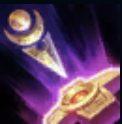
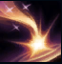
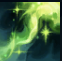
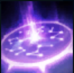

PASSIVE
Salvation:
Soraka will increase his movement speed by 70% when moving towards nearby
friendly heroes with less than 40% health.

Q
Meteor fall:
Summon a meteor and fall from where Soraka is to the target location.

W
Star Infusion:
Restores 80/110/140/170/200 (+0.6AP) health to target allies.

E
Astral enchantment:
Creates an enchantment for 1.5 seconds in the target area, inflicting 70/95/120/145/170 (+0.4AP)
magic damage to enemy heroes within the cast radius. Enemy heroes will remain silent within the enchantment until they exit the enchantment.
R
Pray:
Summon sacred energy to restore 150/250/350 (+0.55AP) health to each friendly hero.